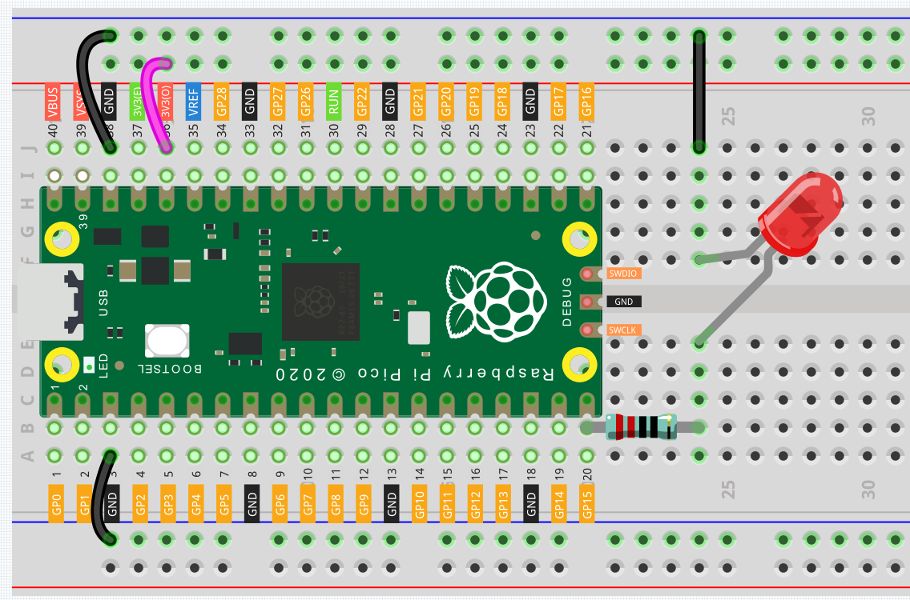

Hello, Breadboard!¶
To use extended electronic components, a solderless breadboard will be the most powerful partner for novice users.
The breadboard is a rectangular plastic plate with a bunch of small holes in it. These holes allow us to easily insert electronic components and build electronic circuits. The breadboard does not permanently fix the electronic components, which makes it easy for us to repair the circuit and start over when we make a mistake.
Note
We can use the breadboard without using special tools. But many electronic components are very small. A pair of tweezers can help us pick up small parts better.
There are many detailed breadboard knowledge on the Internet, let us use it wisely.
For breadboards, what you need to know clearly is:
Each group of half rows inside the breadboard (such as column A-E in row 1 or column F-J in row 3) is connected. This means that when an electrical signal flows in from A1, it can flow from B1, C1, D1, E1, but not from F1 or A2.
Both sides of the breadboard are usually used as power buses, and the holes in each column (about 50 holes) are connected. Generally speaking, the hole near the red wire is used to connect the positive power supply, and the hole near the blue wire is used to connect the negative power supply.
When building a circuit, the current flows from the positive pole and must first flow through the consumer before it can flow into the negative pole. Otherwise, a short circuit may occur.
Now we should have a general impression of the breadboard circuit, why not try to build a “Hello, LED!” expansion circuit?
Wiring¶
Let us follow the direction of the current to build the circuit!
Here we use the electrical signal from the GP15 pin of the Pico board to make the LED work, and the circuit starts from here.
The current needs to pass through a 220 ohm resistor (used to protect the LED). Insert one end (either end) of the resistor into the same row as the Pico GP15 pin (row 20 in my circuit), and insert the other end into the free row of the breadboard (row 24 in my circuit).
Note
The color ring of the 220 ohm resistor is red, red, black, black and brown.
Pick up the LED, you will see that one of its leads is longer than the other. Insert the longer lead into the same row as the end of the resistor, and connect the shorter lead across the middle gap of the breadboard to the same row.
Note
The longer lead is known as the anode, and represents the positive side of the circuit; the shorter lead is the cathode, and represents the negative side.
The anode needs to be connected to the GPIO pin through a resistor; the cathode needs to be connected to the GND pin.
Insert the male-to-male (M2M) jumper wire into the same row as the LED short pin, and then connect it to the negative power bus of the breadboard.
Use a jumper to connect the negative power bus to the GND pin of Pico.
Code¶
The method of controlling the extended LED is the same as the method of controlling the on-board LED, the only difference is that the operating pin is changed to 15.
import machine
import utime
led = machine.Pin(15, machine.Pin.OUT)
while True:
led.toggle()
utime.sleep(1)
toggle() can switch the pin between high level and low level, and you can see the LED blinking.
Also see reference here: